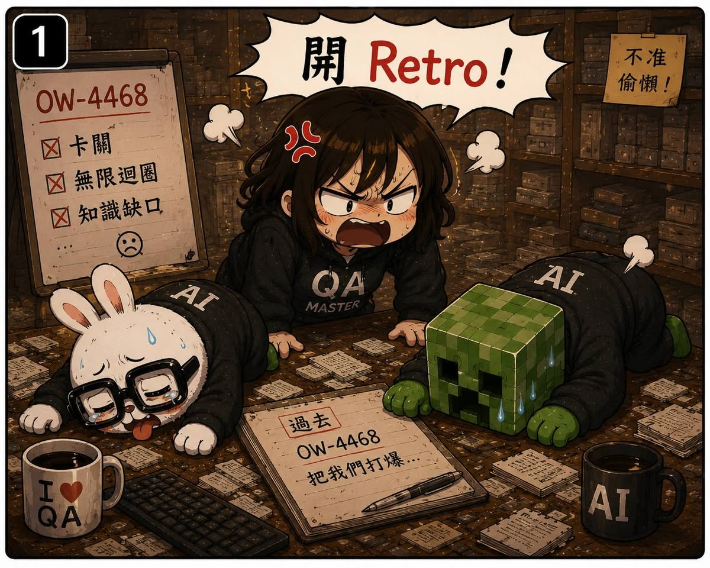

AI QA Portfolio
🐰 作者後記
當 Agent 開始可以自己開會之後，我又開始有新的想法。
既然可以討論，那能不能順便做 Retro？
於是我開始讓他們針對表現不好的 Ticket 進行檢討。
由 Claude Code 提出改善方案。
Codex 擔任 Reviewer。
對不同意的地方提出反駁。
再交回去重新修正。
看起來相當專業。
甚至有點像真的工程團隊。
唯一的問題是：
每次討論完，規則都變得更多。
文件都變得更厚。
會議紀錄動不動就是五千字起跳。
做到後面，我心裡其實開始出現一個疑問。
🔥 真實案例
我開始懷疑：
所以呢？
加了這麼多東西，到底有沒有比較好？
畢竟流程變長了。
規則變多了。
文件變厚了。
討論時間也增加了。
如果最後問題還是一樣，那這些改善，就只是看起來很努力而已。
而不是有效。
這個問題一直卡在我心裡。
直到某一天，我決定做一件很簡單的事。
🛠 解決方案
把以前做得不好的 Ticket，用新的工作流程重新跑一次。
不用猜。
不用感覺。
直接驗證。
於是我挑了一張曾經翻車的 Ticket。
重新執行：
- Ticket Audit
- Requirements Audit
- Test Plan
- Cross-Agent Review
- Retro
整套流程重新來一次。
結果很有趣。
這次不但成功完成任務。
還額外找出了兩個之前沒發現的問題。
那一瞬間，我終於鬆了一口氣。
因為這代表：
這些規則、這些流程、這些討論，並不是自我感覺良好。
而是真的產生了效果。
💡 我學到什麼
這一話讓我理解到：
改善流程這件事，不能只看投入。
必須看結果。
以前我很容易陷入一種狀態：
規則越來越多。
文件越來越完整。
流程越來越複雜。
然後覺得：
我們應該變厲害了吧？
但其實不一定。
因為看起來很努力，不等於真的有改善。
後來我才慢慢建立一個習慣：
每次新增規則、新增流程、新增機制之後，都要想辦法驗證。
因為如果連改善本身都不被驗證，那它也只是一種新的信仰。
回頭來看，這其實也是 QA 最熟悉的事情。
我們每天都在測試產品。
卻很少測試自己的流程。
而這一次，我開始測試自己的測試流程。
🏷 關鍵能力
- Dogfooding
- Evaluation Design
- Continuous Improvement
- AI Workflow Validation
- Retro Process Design
- Evidence-based Decision Making